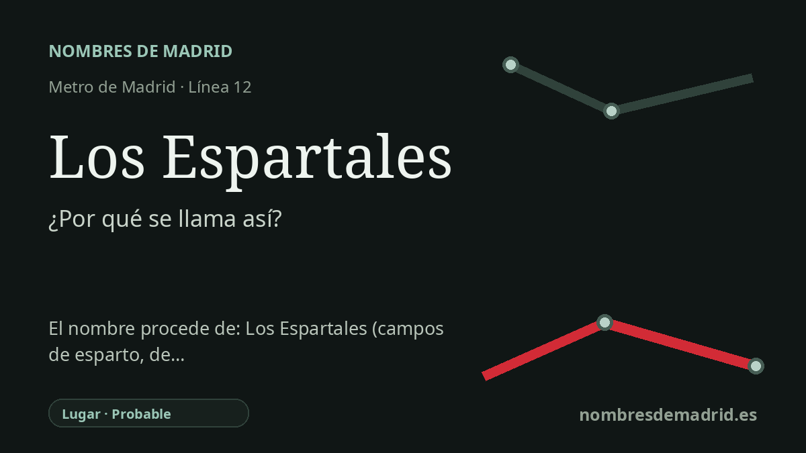

Publicado el · Investigación de Nombres de Madrid · Cómo verificamos cada origen · 9 fuentes consultadas
Respuesta rápida
Los Espartales toma su nombre de la zona de Los Espartales, en Getafe Norte. El topónimo procede de 'espartal', terreno donde crece o se cría el esparto.
La historia del nombre
La estación de Los Espartales toma su nombre de la zona de Los Espartales, en Getafe Norte, el barrio septentrional de Getafe donde se encuentra la parada. Las fuentes municipales y de transporte la sitúan en la avenida de Rigoberta Menchu y la incluyen entre las estaciones de la línea 12, MetroSur, que sirven a Getafe Norte.
Detrás del nombre del barrio hay una palabra de paisaje anterior a la urbanización moderna. La Real Academia Española define 'espartal' como un terreno donde se cría esparto, de modo que 'Los Espartales' evoca literalmente campos o manchas de esparto. El esparto es una gramínea resistente de ambientes secos cuyas hojas y fibras se emplearon tradicionalmente para hacer cuerdas, esteras, cestos y otros objetos de uso cotidiano.
La cronología urbana moderna es mucho más reciente que la palabra. Getafe Norte se construyó principalmente a mediados y finales de los años noventa dentro de un importante plan urbanístico, y en referencias municipales de esa década ya aparece la denominación de actuación Getafe Norte-Los Espartales. MetroSur llegó después, el 11 de abril de 2003, y dio a esta zona residencial en crecimiento una estación con el nombre del lugar.
El nombre también conecta con un contexto artesanal madrileño. La documentación patrimonial de la Comunidad de Madrid sobre el hilado tradicional del esparto vincula esta fibra sobre todo con el sureste de la región, donde podía recolectarse y transformarse en sogas, cordeles y otros productos. Eso no demuestra que el punto exacto de la estación fuera antiguamente un espartal, pero sí explica por qué la palabra tenía sentido en el paisaje y la economía regionales.
La explicación mejor respaldada es, por tanto, directa y local: Metro nombró la estación por Los Espartales, y Los Espartales es un topónimo descriptivo de vegetación y paisaje. No consta ningún nombre anterior de la estación. En 2025 se planteó cambiarla a 'Coliseum' por ser el principal acceso en Metro al estadio del Getafe CF, pero las páginas oficiales de transporte consultadas siguen registrando la parada como Los Espartales.